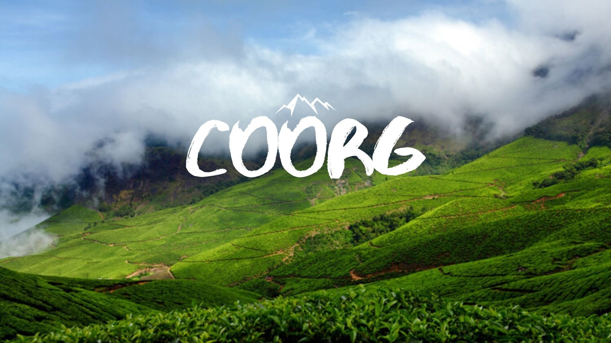

Coorg
Hill Station
Fondly called the Scotland of India, Coorg is one of the top hill stations in South India and among the most popular attraction not to miss in your Karnataka holiday packages. Coorg (or Kodagu) is about 265 km from Bangalore city and takes about 6 hrs drive.
Coorg is the largest producer of Coffee in India. Also, it is one of the places with the highest rainfall in India. Places like Raja's Seat, Abbey Falls, Iruppu Falls, Omkareshwara Temple, Bylakuppe, Talacauvery and Dubare are the major attractions to be included in Coorg Holiday Packages. The famous Cauvery River is originated in the hills of Coorg at Talacauvery.
Mysore
Mysore, the erstwhile capital of the Mysore Maharajas, is one of the popular destinations in Karnataka and among the must-visit places as part of 2 day trip near Bangalore. It is about 139 km from Bangalore. With its dazzling royal heritage, intricate architecture, its famed silk sarees, yoga, and sandalwood, Mysore is one of the top heritage sites in India.
Often called the City of Palaces, Mysore still retains its old-world charm with its palaces, heritage buildings, traditions, and temples. Mysore Palace is among the must include places in your Mysore tour packages.
Chikmagaluru
Chikmagalur or Chikkamagaluru is a scenic hill town situated at the foothills of Mulliyangiri range with an altitude of 3,400 feet. It is one of the best hill stations in Karnataka and among the most famous tourist places near Bangalore.
Chikmagalur is famous for its serene environment, lush green forests and tall mountains. Baba Budangiri, Hirekolale Lake, Mulliyangiri, Ayyanakere Lake, Manikyadhara Falls, Horanadu and Kemmanagundi are among the must include places in Chikmagalur Holiday Packages.
Chikkamagaluru is also famous for coffee and is known as the Coffee Land of Karnataka.
Hampi
Hampi is a renowned UNESCO World Heritage Site situated on the banks of Tungabhadra River in northern Karnataka. Situated about 340 km from Bangalore & 377 km from Hyderabad, Hampi is one of the best heritage sites in India and among the must include places in your Karnataka tour packages.
Hampi is an extremely significant place in terms of history and architecture as it stands within the ruins of the city of Vijayanagara, the former capital of the Vijayanagara Empire. It is an open-museum of architecture, religion, and history dotted with innumerable gems that were hewed from stones.
Udupi
Udupi is one of the most famous pilgrimage sites in Karnataka, and among the top places to visit near Mangalore. Located between the verdant mountains of the Western Ghats and the Arabian Sea, Udupi is the land of breathtaking beauty. It is about 59 km from Mangalore, and 403 km from the city of Bangalore.
Udupi is famous for Sri Krishna Temple which attracts pilgrims from all over India. This temple has a fascinating idol of Lord Krishna that is richly adorned with jewels. Apart from the temple, Malpe Beach, Kaup Beach & St Mary's Island are the top places to visit as part of Udupi holiday packages.
Udupi can also be visited along with Murudeshwar packages. It is also the source of renowned Udupi cuisine, which is served all over India in the efficiently-run Udupi restaurants, famous for dosas, idlis and other snacks. The tradition of this cuisine started in the great kitchens of the Krishna
Murdeshwar
Murudeshwar is one of the most famous places to visit in Karnataka and among the popular places of pilgrimage in Karnataka. It is about 162 km from Mangalore & 497 km from Bangalore.
Murudeshwar is the abode of Lord Shiva. The temple town is famous for the world's second tallest Shiva statue (123 ft) & tallest temple tower (249 feet). The sea on three sides surrounds the Murudeshwar Temple towering on the small hill called Kanduka Giri. This is a great place to watch the sunset. Murdeshwar Beach, Kollur Temple are popular sites to visit as part of Murudeshwar holiday packages. Gokarna, Karwar, Kollur, Udupi, Jog Falls, Sirsi & Sringeri are the nearby attractions.
Maha Shivaratri during February is the important festival celebrated here with much devotion and religious rituals. The best time to visit Murudeshwar is from November to February.
Gokarna
Gokarna is one of the famous places of pilgrimage in Karnataka, and among the top places to visit as part of Karnataka tour packages. It is about 514 km from Bangalore.
Sri Mahabaleshwar Temple which houses the Atmalinga is one of the must-visit places as part of Gokarna holiday packages. Gokarna is considered to be the Mukti Stala, where Hindus perform funeral rites. Gokarna is also home to some of the best beaches in Karnataka including Om Beach, Kudle Beach, Gokarna Beach.
Among the beaches in Gokarna, the Om Beach is extremely popular.